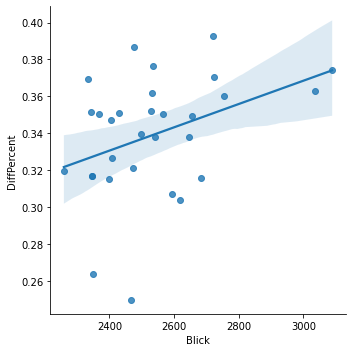

Tops and flops of the month
In a nutshell: what was the best and worst day of the month in the competition for visits between Blick and 20 Minuten?
Juni 2021 daily visitors
In a nutshell: what was the best and worst day of the month in the competition for visits between Blick and 20 Minuten?
Woaw!
On 06.06.2021, Blick was closest to 20 Minuten, with a 24% difference in visits only (that's 8% smaller than average).
This day, we had 2,465,900 visits (vs 3,169,300 for 20 Minuten).
This was our #19 day of the Month in terms of visits.
These were the most trending Twitter topics in Switzerland on that day:
#AzerbaijanGP, Hamilton, Pirelli, Vettel, Verstappen
Well, not so good…
On 13.06.2021, Blick was really distanciated by 20 Minuten, with a 39% difference in visits (that's 5% more than average). This is our worst day in the battle.
This day, we had 2,721,600 visits (vs 4,050,900 for 20 Minuten).
This was our #5 day of the Month in terms of visits.
These were the most trending Twitter topics on that day:
#Abst21, #CO2Gesetz, #CHvote, #ENGCRO, #Abstimmungssonntag
For each day, the top news of the days for Switzerland, according to a service called Gnews.io.
Unfortunately, we are not so sure the data is reliable, but the very reliable Google doesn't provide a history of top news.
Linear correlation between # of visits and gap between Blick and 20 Minutes?

Pearson's R: (0.3766570456661167, 0.04020583190045816)